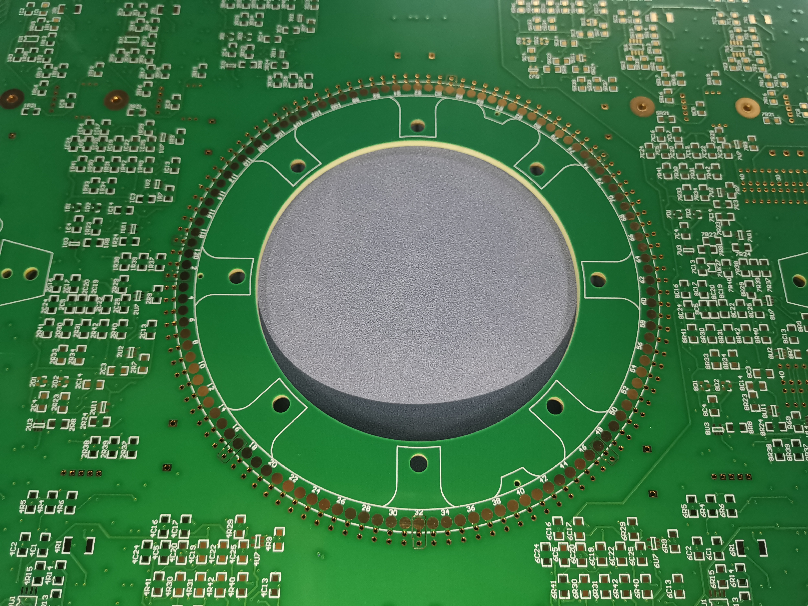
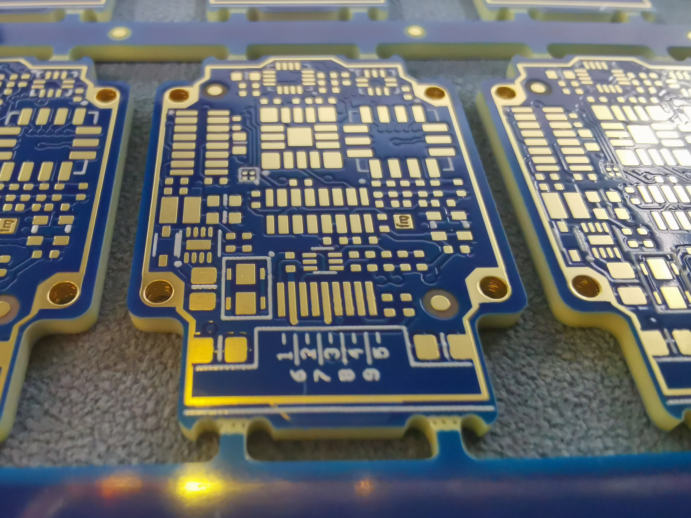
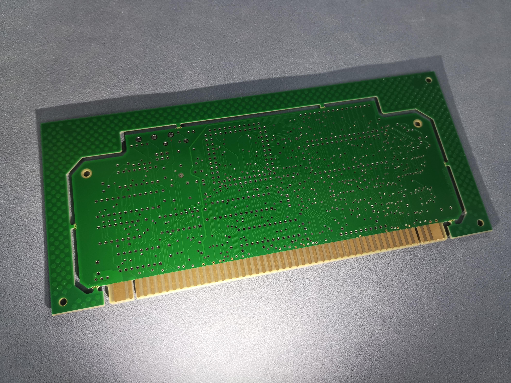

SHENZHEN RUIBOXINGYUAN ELECTRONICS CO. LIMITED | Trusted PCB Manufacturer for Global Clients



Welcome to our PCB manufacturing company, SHENZHEN RUIBOXINGYUAN ELECTRONICS CO. LIMITED(RBXY PCB), a trusted partner for high-quality printed circuit boards (PCBs) serving global clients across industries. With years of experience in the PCB industry, we are committed to delivering reliable, precise, and cost-effective PCB solutions tailored to meet the diverse needs of our international customers. Our core strength lies in advanced manufacturing technology, strict quality control, and customer-centric service, making us a preferred choice for businesses seeking top-tier PCB products.
We boast a state-of-the-art production facility equipped with advanced machinery and equipment, covering the entire PCB manufacturing process from gerber file optimization to final inspection. Our team of professional engineers and technicians has rich industry experience, proficient in tackling complex PCB manufacturing challenges. We adhere to international quality standards and implement strict quality control measures at every production stage, ensuring that each PCB product meets or exceeds customer expectations.
Our commitment to quality, innovation, and timely delivery has earned us a solid reputation in the global market. We cooperate with clients from various fields, including electronics, telecommunications, automotive, medical, aerospace, and consumer electronics, providing customized PCB solutions that support their product innovation and market competitiveness. No matter your project size or technical requirements, we have the capability and dedication to deliver the best PCB products and services for you.
Our multilayer PCBs are manufactured to meet the increasing demand for high-density, high-performance electronic devices. With the ability to produce PCBs with 4 to 40 layers, we can cater to a wide range of applications, from consumer electronics to industrial control systems and aerospace equipment. Our multilayer PCBs feature excellent signal integrity, high reliability, and compact design, making them ideal for devices that require miniaturization and high functionality.
Key Features:
Surface finish: OSP, leaded HAL, lead-free HAL, ENIG, immersion tin, immersion silver, hard gold plating, selective hard gold plating, hard gold fingers, ENEPIG.
Applications: Consumer electronics, industrial control systems, automotive electronics, medical devices, aerospace equipment, communication infrastructure.
High-Density Interconnect (HDI) PCBs are our core product for high-density, miniaturized electronic devices that require precise signal transmission. HDI PCBs feature smaller vias, finer line widths and spaces, and higher component density, enabling the integration of more functions in a smaller footprint. We utilize advanced manufacturing technologies such as laser drilling and micro-via processing to ensure the highest precision and performance of our HDI PCBs.
Key Features:
Applications: 5G communication devices, smartphones, wearable electronics, medical equipment (portable monitors, diagnostic tools), automotive infotainment systems, IoT devices.
Heavy copper laminates are for PCB applications that require high current carrying capacity and excellent heat dissipation. We use high-quality copper foils with thicknesses ranging from 2oz to 20oz, combined with advanced lamination technology, to produce heavy copper laminates with strong adhesion, uniform copper thickness, and high thermal conductivity. These laminates are widely used in power electronics, automotive power systems, and industrial control equipment where high current and heat dissipation are critical.
High frequency laminates are specialized PCB materials engineered for circuits operating in RF and microwave frequency ranges. Unlike standard FR4 materials that may cause excessive loss and unstable impedance at high frequencies, our high frequency laminates offer low dielectric loss (low Df), stable dielectric constant (stable Dk), and excellent signal integrity, making them ideal for high-frequency applications such as 5G communication, satellite systems, automotive radar, and microwave modules. Common material options include Rogers RO4350B and Wangling, which ensure stable performance even in harsh environments.
Peelable mask is a temporary protective coating applied to specific areas of PCBs during manufacturing and assembly processes. It prevents solder bridging, contamination, and damage to sensitive components or PCB areas during soldering, chemical treatment, or handling. After the manufacturing process is completed, the peelable mask can be easily removed without leaving any residue, ensuring the cleanliness and functionality of the PCB surface. This process is particularly useful for PCBs with mixed surface finishes or sensitive components that require temporary protection.
Carbon print is a cost-effective process that uses conductive carbon paste to print conductive paths, contact points, or resistors on PCB surfaces. This process eliminates the need for traditional copper etching in certain areas, reducing manufacturing costs while maintaining reliable conductivity. Carbon print is widely used in low-current applications such as remote controls, calculators, toys, and simple electronic devices, where it serves as key contact points or jumpers. The carbon layer is cured at high temperatures to ensure strong adhesion and stable performance.
Castellated holes, also known as stamp holes, are half-hole structures located on the edge of PCBs, with the hole wall metallized. The manufacturing process involves drilling full holes first, followed by CNC milling to cut the holes in half, exposing the metallized hole wall. Castellated holes are primarily used for modular PCB assembly, allowing the PCB to be soldered directly to a motherboard or another PCB, enabling reliable electrical connection and mechanical fixation. This process is commonly used in modular electronic devices, communication modules, and small electronic components.
Pad on via (PoV) technology, also known as via in pad plated over (VIPPO), is a manufacturing process where vias are placed directly within the copper landing pad of surface-mount components. The vias are filled with epoxy resin, planarized to create a flat surface, and then plated over with copper, resulting in a smooth, solderable surface that functions like a regular pad. This technology eliminates the need for "dog-bone" fanout traces, saving space and shortening signal paths, making it ideal for fine-pitch BGAs and high-density layouts. It also enhances thermal performance and reduces signal interference, suitable for high-speed and high-density PCB applications.
Countersink and counterbore are precision drilling processes used to create recessed areas on PCB surfaces for fasteners (such as screws) or component mounting. Countersink creates a conical recess that allows the head of a flat-head screw to sit flush with the PCB surface, while counterbore creates a cylindrical recess that accommodates the head of a pan-head or round-head screw. These processes ensure secure component mounting, prevent damage to components or PCB traces, and maintain the flatness and aesthetics of the PCB surface. They are widely used in industrial control equipment, automotive electronics, and devices that require secure mechanical fixation.
Blind and buried vias are advanced via technologies used in high-density PCBs to save space and improve signal integrity. Blind vias only connect the outer layer to specific inner layers, while buried vias are completely hidden between inner layers, not extending to the outer surface of the PCB. These vias eliminate the need for through-holes that occupy valuable surface space, allowing for higher component density and finer circuit routing. They also shorten signal transmission paths, reducing signal delay and crosstalk, making them ideal for HDI PCBs, 5G devices, and other high-performance electronic products. Our manufacturing process ensures precise via positioning, uniform plating, and reliable interlayer connection.
Edge plating is a process that deposits a metal layer (usually copper, nickel, or gold) on the edges of PCBs. The process involves CNC milling the PCB edges to ensure smoothness, followed by chemical cleaning and electroplating to form a continuous metal layer. Edge plating enhances the mechanical strength of the PCB, improves electrical conductivity for edge contacts, and provides effective electromagnetic shielding (EMI) to reduce signal interference. It is commonly used in PCBs that require edge connectors, such as memory modules, expansion cards, and industrial control boards, as well as devices with strict EMI requirements.
Hard gold plated fingers are gold-plated edge contacts on PCBs, for applications that require frequent insertion and removal, such as memory modules (DDR4/DDR5), PCIe cards, and edge connectors. The hard gold layer (alloyed with cobalt or nickel) has high hardness, excellent wear resistance, and low contact resistance, ensuring stable electrical connection even after hundreds of insertion cycles. We control the gold thickness precisely (usually 30-50 microinches) to balance performance and cost, and the plating process ensures uniform coverage and strong adhesion. These gold fingers are widely used in computers, data centers, networking equipment, and industrial control systems.
Controlled impedance is a critical process for PCBs used in high-speed, high-frequency applications, ensuring that the impedance of signal traces remains consistent throughout the PCB. This process involves precise control of trace width, trace spacing, dielectric thickness, and copper thickness, as well as the selection of appropriate substrate materials. We use advanced impedance calculation and testing tools (such as TDR / time-domain reflectometers) to ensure that the impedance meets customer specifications (typically ±10% for standard applications). Controlled impedance prevents signal reflection, distortion, and crosstalk, ensuring stable signal transmission in 5G, IoT, and high-speed digital devices.
Depth controlled drilling/milling is a precision manufacturing process that controls the depth of holes or grooves on PCBs to a specific tolerance (usually ±0.1mm). This process is used to create blind holes, recesses for component mounting, or grooves for heat dissipation, ensuring that the drilled/milled area does not penetrate the entire PCB or damage inner layers. We use advanced CNC drilling/milling machines with precise depth control systems, and calibrate the equipment before production to ensure accuracy. This process is essential for HDI PCBs, automotive electronics, and devices that require precise component placement and heat management.
Laser drilling is an advanced drilling process used to create micro-vias (0.1mm) and small holes in PCBs, especially HDI PCBs. Unlike traditional mechanical drilling, laser drilling uses high-energy laser beams to ablate the substrate material, creating precise, clean holes with minimal burrs and no damage to surrounding traces. This process enables high drilling speed, high precision, and the ability to drill holes in complex patterns, making it ideal for high-density, miniaturized PCBs. We use CO2 and UV lasers to meet different drilling requirements, ensuring consistent hole size and position accuracy.
Back drilling is a specialized drilling process used to remove the stubs of through-holes in high-speed PCBs. These stubs can cause signal reflection, crosstalk, and signal delay, affecting the performance of high-frequency circuits. Back drilling involves drilling from the opposite side of the PCB to remove the unwanted stub, leaving only the necessary part of the via for interlayer connection. This process improves signal integrity, reduces signal loss, and is widely used in 5G communication devices, high-speed servers, and other high-performance electronic products that require stable signal transmission.
Press-fit holes are specialized holes in PCBs for solder-free mechanical connection with press-fit pins (rigid pins of electronic components). The process involves precise control of hole size and tolerance (usually ±0.05mm) to ensure a tight mechanical interference between the press-fit pin and the hole wall. When the pin is inserted into the hole, the hole wall undergoes slight plastic deformation, creating a reliable electrical connection and mechanical fixation. Press-fit holes eliminate the need for soldering, reducing thermal stress on the PCB and components, and are suitable for high-reliability applications such as automotive electronics, industrial control systems, and communication equipment.
Selective hard gold plating is a process that applies hard gold plating only to specific areas of the PCB (such as contact points, connectors, or gold fingers), rather than the entire surface. This process reduces manufacturing costs while ensuring that critical areas have the required wear resistance and electrical conductivity. We use precise masking techniques to protect non-plated areas, and control the gold thickness and plating uniformity to meet customer requirements. Selective hard gold plating is widely used in PCBs with mixed surface finishes, such as consumer electronics, medical devices, and industrial control equipment.
Hard gold plating is a surface finish process where gold alloyed with cobalt or nickel is electroplated onto the PCB surface. The alloying elements increase the hardness of the gold layer (130-200 HK, compared to 60-90 HK for pure gold), providing excellent wear resistance and low contact resistance. This process is used for PCB surfaces that require frequent contact, such as connectors, keypads, and edge contacts. We offer customizable gold thickness (from 0.05μm to 1.27μm) and ensure uniform plating coverage and strong adhesion, complying with international standards and customer specifications.
ENEPIG (Electroless Nickel Electroless Palladium Immersion Gold) is a high-performance surface finish process that provides a universal solution for both soldering and wire-bonding applications. The process involves depositing a layer of electroless nickel, followed by electroless palladium, and a final layer of immersion gold. The palladium layer slows the diffusion of tin into the nickel, ensuring high solder joint reliability even under long-term thermal stress. ENEPIG is less expensive than electrolytic gold finishes, complies with RoHS and WEEE regulations, and is widely used in IC package substrates, multi-functional assemblies, and PCBs for harsh environments.
Jump V-score is a precision scoring process used to separate PCB panels into individual PCBs (singulation) while maintaining the integrity of the PCB edges. The process involves making V-shaped grooves on both sides of the PCB panel, with the depth controlled to ensure that the panel can be easily broken apart without damaging the PCB traces or components. Jump V-score is particularly useful for PCBs with delicate components or tight spacing, as it avoids the mechanical stress and burrs caused by traditional routing. This process ensures clean, smooth PCB edges and improves production efficiency, suitable for high-volume PCB manufacturing.
Tiny PCBs (small-dimension PCBs) are for miniaturized electronic devices that require compact, lightweight PCBs with high functionality. We specialize in manufacturing tiny PCBs with minimum dimensions as small as 2mm×2mm, featuring fine line widths/spaces (3/3mil) and micro-vias. These PCBs are manufactured using advanced precision manufacturing technologies, ensuring high accuracy, reliability, and consistency. Tiny PCBs are widely used in wearable electronics, IoT devices, medical implants, and small consumer electronics, where space is a critical constraint.
We strictly adhere to IPC (Association Connecting Electronics Industries) standards, offering PCB products that meet both IPC Class 2 and IPC Class 3 requirements. IPC Class 2 is the standard for commercial electronic products, requiring high reliability for general applications such as consumer electronics, office equipment, and non-critical industrial devices. IPC Class 3 is the highest standard for high-reliability electronic products, requiring strict quality control and performance standards for applications such as aerospace, medical devices, automotive safety systems, and military equipment. Our manufacturing process and quality control system are fully compliant with these standards, ensuring that our PCBs meet the most stringent reliability and performance requirements of our customers.
We are committed to delivering high-quality PCB products and reliable manufacturing solutions for global customers. From raw material selection, precision production to strict quality inspection, every process follows international industry standards.
We implement rigorous quality control at each production stage, ensuring all PCBs feature excellent stability, high reliability and long service life. Adhering to quality-oriented philosophy, we strive to meet your strict requirements for prototype, mass production and high-density circuit boards.
Our manufacturing processes and quality control systems are fully certified to meet and exceed IPC Class 2 and Class 3 requirements.Every PCB undergoes a series of comprehensive tests and inspections throughout the manufacturing lifecycle to ensure it meets all design specifications, electrical performance criteria, and reliability standards.
We are committed to providing you with professional PCB solutions and excellent customer service. If you have any questions about our products, processes, or services, or if you need a customized PCB quote, please feel free to contact us through the following channels. Our team will respond to you within 24 hours and provide you with the most professional support.
SHENZHEN RUIBOXINGYUAN ELECTRONICS CO. LIMITED(RBXY PCB)
Email: sales@rbxy-pcb.com
Phone: +86-755-27209221
Address: East area of 3rd floor, Building 2, 2nd floor, Block 101A, Building 1, No 8 Guangtian Road, Luotian Community, Yanluo Street, Baoan District, Shenzhen, Guangdong，518105， China
We look forward to cooperating with you and becoming your trusted PCB partner!